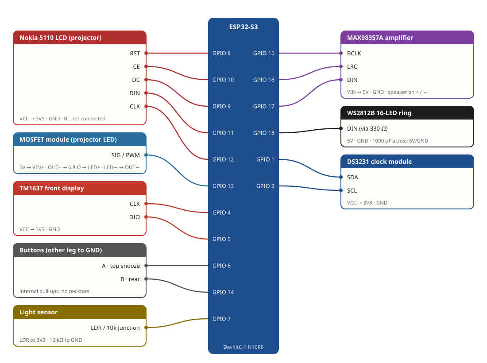

Wiring
Signal wires go to the ESP32-S3 GPIO pins below. Every logic module runs on 3.3 V; only the LED, ring, amplifier and the board's 5V pin take 5 V. The pins match firmware/src/pins.h. If you wire differently, change that file.

GPIO numbers are the labels printed on the DevKitC-1 board, not physical pin positions.
Power
| From | To | Notes |
|---|---|---|
| USB-C breakout VBUS (5 V) | 5 V rail on the perfboard | Use 22 AWG or thicker; peak draw is about 2 A |
| 5 V rail | ESP32 5V pin, MAX98357A VIN, ring 5V, MOSFET module VIN+ | Put the 1000 µF capacitor across 5 V/GND right at the ring lead, and the 100 µF at the amplifier |
| ESP32 3V3 pin | LCD VCC, TM1637 VCC, DS3231 VCC, LDR | Light loads only |
| GND | Every module | Join all grounds at one point on the board |
Projector LED circuit
5 V → MOSFET module VIN+ / VIN−. Module OUT+ → LED resistor → LED +. LED − → module OUT−. GPIO 13 → module SIG/PWM, module GND → GND. The firmware dims the LED with 10 kHz PWM.
LED resistor: one 4.7 Ω 2 W resistor from the 2 W kit. That gives roughly 400 mA, which is well under the LED's 700 mA rating. The resistor dissipates about 0.75 W, so it runs warm: leave a few millimetres of air around it. For a dimmer, cooler projector, use the kit's 10 Ω instead (about 200 mA).
Board notes
- DS3231 ZS-042 boards trickle-charge their battery. With a non-rechargeable CR2032, remove the 200 Ω resistor or diode next to the battery holder first.
- WS2812B ring: 3.3 V data usually works on short leads. If colours glitch, add a 74AHCT125 level shifter.
- MAX98357A: leave GAIN unconnected (9 dB) and SD unconnected (left + right mix).
- Nokia 5110: leave BL unconnected; the backlight is removed when you cut the window.